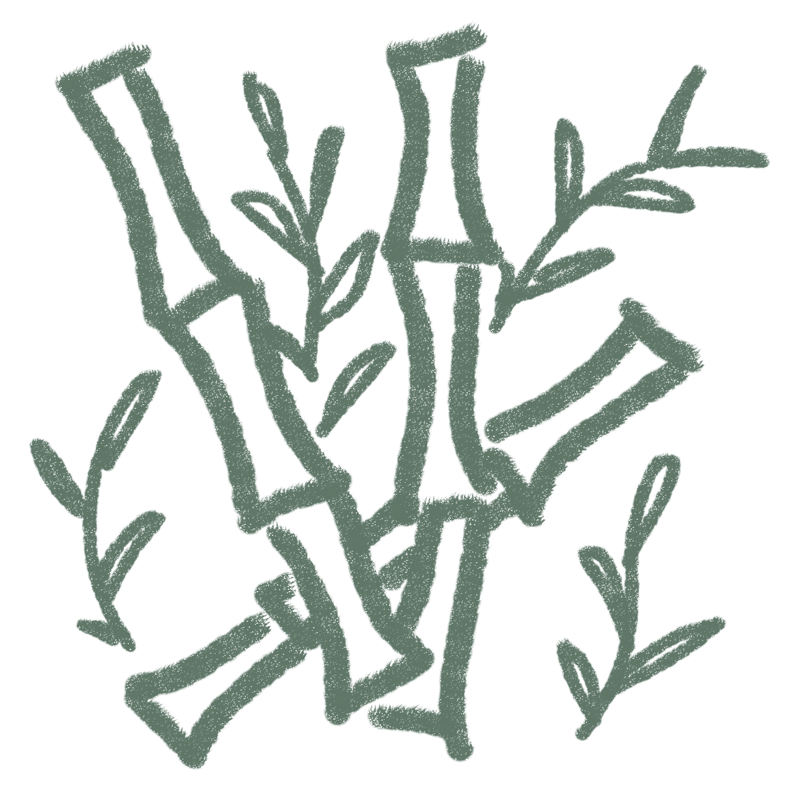
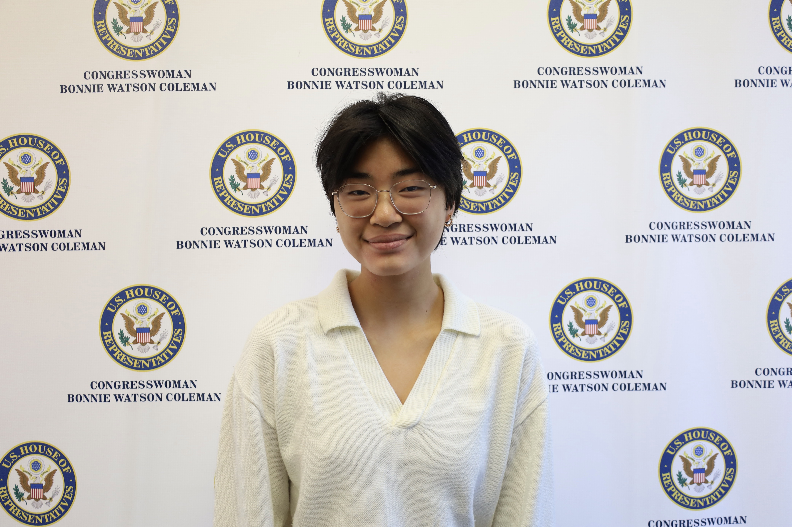

Hello, my name is Maya Mau.
I am a college student who dabbles in the intersection of computer science, chemistry, and bioinformatics.
What I do
As someone who enjoys solving problems in creative ways, I am in my element when using interdisiplinary approaches to tackle a unique challenge. I've modeled complex proteins using computational chemistry methods, built machine learning models, and created chatbots using large language models. My goal is to combine my two fields of study - computer science and chemistry - to apply new technologies to traditional problems in chemistry and biology.
When I'm not frantically researching how to resolve a git merge conflict or keeping my computer awake to finish training a model, you can find me making wire jewelry or taking a soldering class! I run my own small business selling jewelry, and vend at local craft fairs on campus and around the Boston area.

Learn More About What I Do
Learn more about my research and project experiences!